Tierslieux86 est une entreprise qui met à disposition des espaces de travail partagé (ETP) pouvant accueillir des employés d’entreprise. Pour ce faire, elle propose entre autres d’intégrer dans son domaine Active Directory la structure de ses clients, un accès Wi-Fi sécurisé, un service de stockage de fichiers et la création de comptes utilisateurs. Au cours de cet atelier, nous aurons à intégrer l’entreprise cliente ValorElec, en suivant un plan composé de quatre missions.
Contexte général des ETP
Contexte spécifique de l'ETP de Chasseneuil
Compte-rendu de l'atelier EvolSysWin
Documentation technique de l'atelier EvolSysWin
Scripts Powershell
Compétences couvertes
Bloc 1 : Support et mise à disposition de services informatiques
Gérer le patrimoine informatique
Mettre en place les niveaux d’habilitation : partage de ressources réseau
Travailler en mode projet
Analyser les objectifs et les modalités d’organisation d’un projet
Mettre en place un suivi du projet
Mettre à disposition des utilisateurs un service informatique
Déployer un service : Active Directory, serveur de fichier iSCSI
Accompagner les utilisateurs : fourniture des données de connexion avec indication de stratégie de mot de passe
Bloc 2 : Solutions d'Infrastructures, Réseaux et Systèmes
Concevoir une solution d'infrastructure réseau
Étude et prototypage de l’infrastructure système Windows Active Directory d’une entreprise cliente : création et organisation des unités d’organisation
Exploiter, dépanner et superviser une solution d'infrastructure réseau
Étude de l’automatisation des tâches d’administration système sous Windows : écriture de scripts PowerShell
Bloc 3 : Cybersécurité des services informatiques
Assurer la cybersécurité d'une infrastructure réseau, d'un système, d'un service
Sécuriser l’infrastructure système pour l’entreprise cliente : mise en place de stratégies de mots de passe via des GPO
Le maître d'ouvrage, le CNED, a exprimé ses besoins via les contextes des ETP de Poitou et Chasseneuil. Ils sont téléchargeables ci-dessus. En tant qu'unique personne sur le projet, j'ai été maître d'oeuvre et cheffe sur ce projet. Réalisé selon une méthode en cascade, ce dernier a connu un suivi via l'application en ligne Trello.
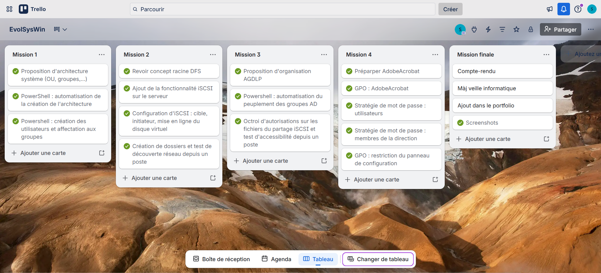
L'outil Trello, disponible en ligne, demande une création de compte pour les nouveaux utilisateurs
Rappel de l'infrastructure
Nous nous appuyerons sur l'atelier précédent (InfraSite) pour ce travail. L'infrastructure utilisée a été maquettée avec Packet Tracer. Selon le contexte donné, nous sommes en présence d'un réseau semblable à ceci :
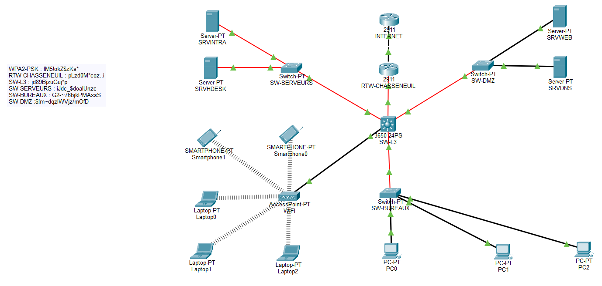
Une représentation du réseau de l'ETP de Chasseneuil sous Packet Tracer
Chaque sous-réseau interne est englobé dans un VLAN, afin de segmenter les communications. Un relais DHCP permet la communication entre la salle serveurs et les bureaux. L'adresse publique du routeur est 10.36.253.20/24. Le Wi-Fi est sécurisé à l'aide d'une clé WPA2-PSK. Voici le plan d'adressage de l'ETP de Chasseneuil :
Nom du réseau
Plage d'adresses
Passerelle par défaut
DMZ
172.16.2.0/24
172.16.2.254
Serveurs
10.2.0.0/24
10.2.0.254
Bureaux
192.168.2.0/24
192.168.2.254
Réseau
Adresse réseau
Passerelle
Terminal
Adresse du terminal
DMZ
172.16.2.0/24
172.16.2.254
Serveur Web
172.16.2.10
Serveur DNS
172.16.2.11
Salle serveurs
10.2.0.0/24
10.2.0.254
Serveur HelpDesk
10.2.0.1
Serveur DNS
10.2.0.2
Pour simuler ce réseau de manière physique, nous nous sommes appuyés sur un prototype virtuel basé sur VirtualBox, et composé d'un routeur VyOS, d'un serveur Windows 2022 implanté dans le réseau des serveurs, et d'un poste Windows 11 Éducation qui sera dans le réseau des bureaux. On pense donc à bien connecter les interfaces réseaux de chacune de ces machines dans le bon réseau interne. Ci-dessous, nous avons la configuration des quatre interfaces du routeur VyOS : chacune est dans un réseau interne de l'entreprise. La DMZ ne sera pas utilisée : elle a été activée uniquement afin de correspondre au mieux à la situation décrite par le contexte.
Configuration réseau des machines sous VirtualBox
Créer la maquette de l'infrastructure système
Présentation de la mission
Documentation technique de la mission 1
Tâche 1
Proposer une organisation en OU, utilisateurs et groupes pour le client ValorElec intégrée à Tierslieux86. Une vingtaine de collaborateurs vont arriver, ils sont répartis de la manière suivante :
10 personnes pour le service recherche et développement
1 commercial
8 personnes pour le service de direction (dont le directeur commercial)
Tâche 2
Automatiser les tâches d'administration (créations des OUs, utilisateurs et groupes, peuplement des groupes et création d'un document Word avec leurs informations personnelles, login du mot de passe,...) par l'écriture de scripts.
Plan d'approche de la tâche 1
Architecture Active Directory
Nous avons déjà à notre disposition une architecture système donnée dans l'atelier InfraSite. Nous pourrions toutefois rajouter, pas seulement pour ValorElec mais pour toutes les autres entreprises, une unité d'organisation qui concentre tous les groupes d'étendue domaine local de l'entreprise. Cette nouvelle unité serait au même niveau que celle des groupes globaux, des utilisateurs et des ordinateurs.
Comme nous sommes partis pour affecter ce changement à toutes les entreprises clientes de l'ETP, nous allons modifier le script chargé de créer les sous-unités d'organisation d'une entreprise.
Organisation en groupes
À chaque service (direction, commerce, recherche et développement) ou statut (employé ou responsable) son groupe global. De surcroît, à chaque groupe global, son groupe domaine local. Nous le verrons plus tard dans la mission 3, mais prendre en compte les statuts hiérarchiques permet d'octroyer des droits sur les dossiers et fichiers d'un service pour lesquels une personne externe à ce service n'aurait normalement pas accès. Au final :
Service/statut représenté
Groupe global
Groupe domaine local
Direction
GG-VALORELEC-Direction
DL-VALORELEC-Direction
Commerce
GG-VALORELEC-Commerce
DL-VALORELEC-Commerce
Recherche et développement
GG-VALORELEC-RD
DL-VALORELEC-RD
Responsables
GG-VALORELEC-Responsables
DL-VALORELEC-Responsables
Employés
GG-VALORELEC-Employés
DL-VALORELEC-Employés
Plan d'approche de la tâche 2
Script PowerShell
Le script Powershell a été conçu afin d’intégrer n’importe quelle entreprise, du moment que cette dernière a son arborescence présente au sein de l’Active Directory. À l’exécution du script, on demandera à l’utilisateur si l’infrastructure à laquelle appartiennent les utilisateurs est une entreprise cliente ou bien l’ETP. C’est une étape décisive qui permet de fixer les chemins des OU et les noms des fichiers utilisateurs sur lesquels on se basera afin de chercher et créer les objets au bon endroit.
D’abord, on s’occupe de la création d’où et de groupes. Pour ce qui est de la modification de l’architecture système, une vérification de l’existence des OU et des groupes est faite avant la création d’un objet. Pour les groupes globaux recensés dans le tableau, on vérifie s’il n’existe pas son jumeau d’étendue domaine local, et si oui, on demande à l’utilisateur si on souhaite ajouter le groupe global comme membre de ce groupe domaine local.
Ensuite, on intègre les utilisateurs. La création des comptes utilisateurs extrait le nom et le prénom de chaque salarié de l’entreprise, ainsi que du service et du statut auquel il appartient. Le login est créé à partir du nom et du prénom. Une fonction est dédiée à la création du mot de passe : ce dernier contient douze caractères, alternant chiffres, majuscules, minuscules et caractères spéciaux. Après sa création de compte, l’utilisateur est affecté ensuite au groupe global du service et du statut auquel il appartient.
Résultats de la mission
Nouvelle organisation basique d'une entreprise représentée dans l'arborescence du domaine Tierslieux86
Pour ce qui est de la modification du script, il a suffit de rajouter une chaîne de caractères, "Groupes domaine local", dans le tableau qui recense les unités d'organisation à créer pour intégrer une entreprise. Voici un aperçu du déroulé de l'exécution du script. Les captures d'écran montrent l'intégration de l'entreprise Esporting, mais cela est tout aussi valable pour ValorElec.
Les unités d'organisation sont créés successivement, en informant de la réussite ou de l'échec de la création
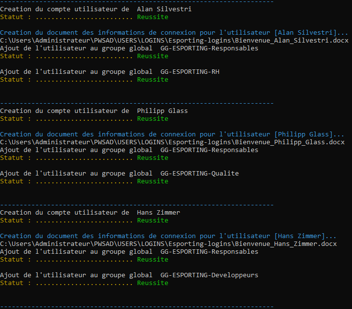
Intégration des utilisateurs grâce aux informations d'un fichier CSV
Dans un cas réel, le fichier CSV peut être issu d'un fichier Excel, que l'ETP exige de la part de l'entreprise. Les logins sont par la suite stockés dans un dossier propre à l'entreprise sur le répertoire de l'adminsitrateur : il faudra que ce dernier les communique aux utilisateurs. Voici une preuve que les fichiers Word ont été édités :
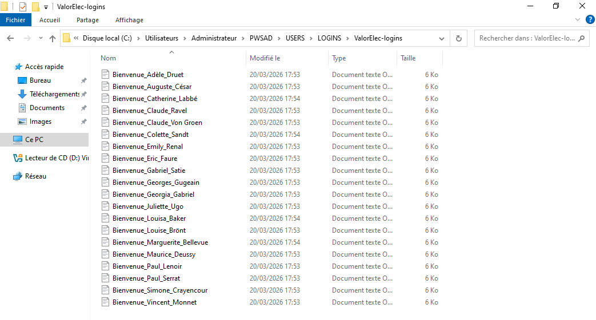
Ensemble des fichiers Word édités à l'issue de l'exécution du script
Et voici ce à quoi l'un d'entre eux ressemble :
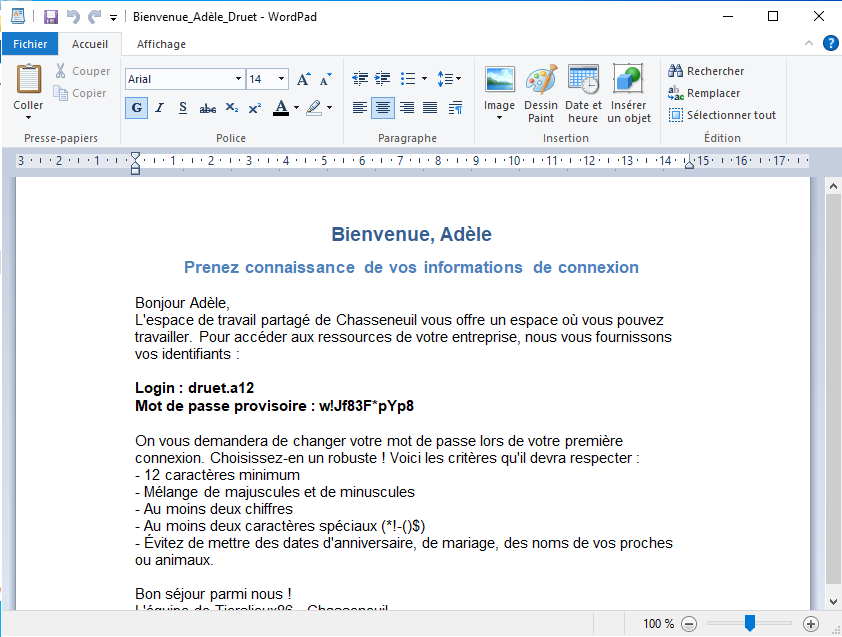
Un fichier Word contenant les informations de connexion de l'utilisateur
Mettre en place un serveur de fichiers
Présentation de la mission
Documentation technique de la mission 2
Tâche 1
Mettre en place un serveur de fichiers basé sur du stockage iSCSI (TrueNas par exemple).
Tâche 2
Réaliser une étude sur l'implémentation d'une racine dédiéeDFS (avantages et inconvénients pour le client ValorElec).
Plan d'approche de la tâche 1
Serveur de stockage iSCSI
L'idée retenue est d'ajouter la fonctionnalité "Cible iSCSI" au serveur contrôleur de domaine. Puis, il faudra configurer le serveur et créer un dossier qui servira de disque virtuel à être exposé. En ce qui concerne la configuration iSCSI, nous activons CHAP. Le processus de cette installation, notamment les choix à faire, sont détaillés dans la documentation technique de cette mission, téléchargeable ci-dessus.
Plan d'approche de la tâche 2
Étude d'une racine DFS
Comme explicité dans la documentation technique :
«Une racine DFS définit le chemin qu'un utilisateur tape pour accéder à un dossier. Cela permet de fixer un nom qui peut être totalement différent du chemin où il se trouve réellement sur le serveur. On note deux types de racines DFS : les racines autonomes ou les racines de nom de domaine. Une racine autonome fait directement dépendre le chemin du serveur de fichiers. Si ce dernier est sujet à un incident, il se pourrait bien que les fichiers deviennent indisponibles.
Une racine de nom de domaine utilise le DNS d'Active Directory pour faire la correspondance entre le chemin de la ressource et la ressource elle-même, ce qui signifie qu'on peut mettre implémenter cette racine sur plusieurs serveurs, et éviter que la ressource devienne injoignable si un serveur tombe en panne.
Dans le cas de ValorElec, il serait préférable de prendre une racine DFS de nom de domaine. L'entreprise a déjà fait les frais d'un incendie qui, heureusement, n'a pas causé de pertes de données : autant faire le choix de la sécurité en prenant un système redondant. L'inconvénient est que ce système dépend d'Active Directory, alors qu'une racine autonome, non. Toutefois, ce défaut reste mineur car l'entreprise possède de toute manière des OU et des objets Active Directory qui la représentent, et qui lui permettent d'ailleurs d'avoir des droits modulaires sur les ressources partagées via le serveur de fichiers. Qui plus est, la racine DFS basée sur le nom de domaine cache le nom du serveur.»
Résultats de la mission
La configuration du nouveau disque iSCSI est récapitulée ici :
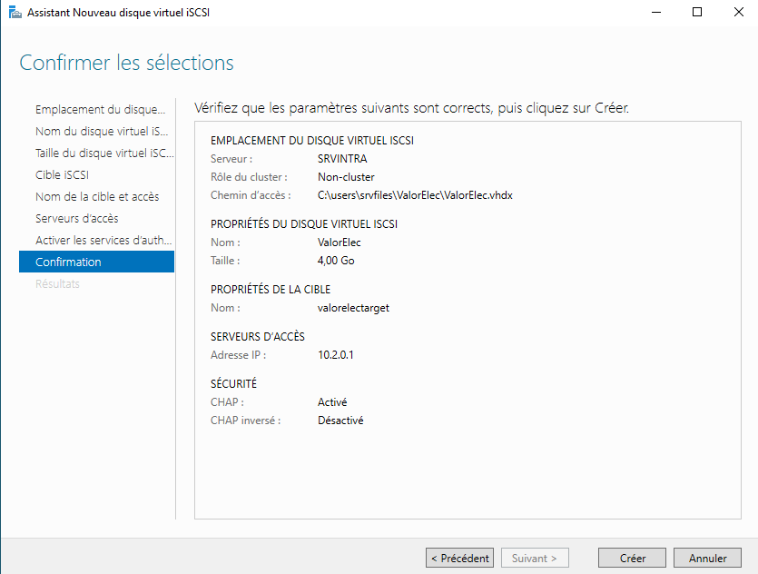
Disque virtuel amené à être exposé pour ValorElec
On a un disque virtuel qui apparaît dans le gestionnaire des disques. Il suffit de les formater et de les mettre en ligne.
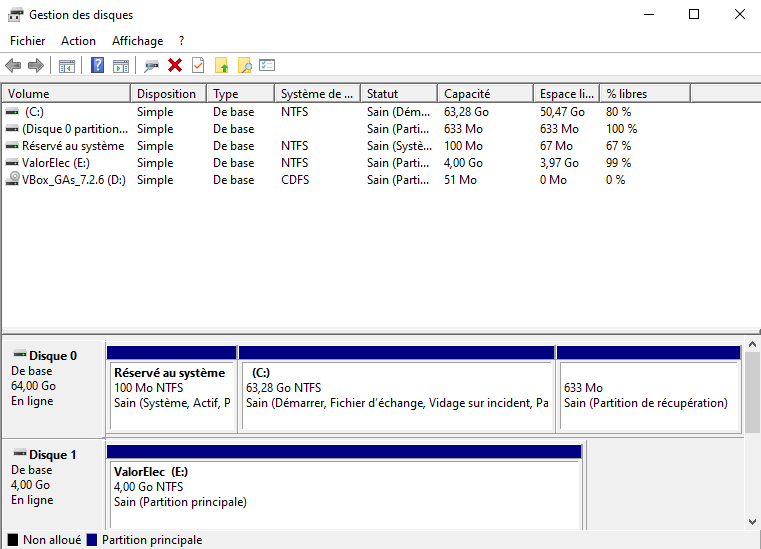
Le disque virtuel est bien créé
Depuis une session utilisateur, on peut vérifier que les dossiers créés et partagés sur ce disque apparaissent bien.
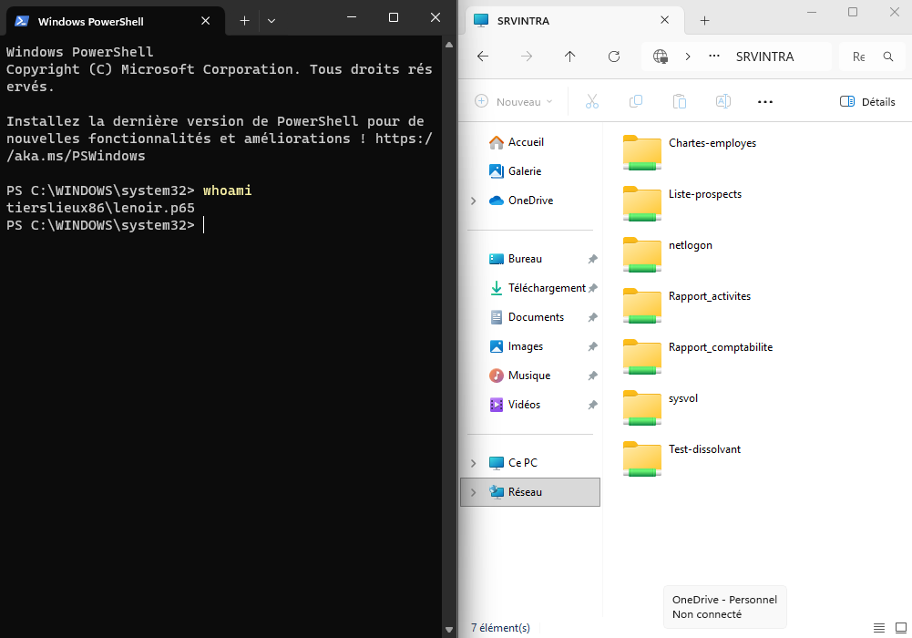
La découverte réseau détecte les fichiers qui sont exposés sur le disque virtuel
Automatiser la mise en place de la sécurité sur les partages
Présentation de la mission
Documentation technique de la mission 3
Tâche 1
Proposer sous forme de tableau les utilisateurs, groupes et droits associés sur les partages.
Tâche 2
Écrire un script Powershell qui vous permettra d'automatiser l'ensemble des tâches pour mettre en place la sécurité sur les partages.
Plan d'approche de la tâche 1
Tableau des partages
Il est clair qu'un commercial ne devrait pas pouvoir lire les fichiers de la direction, par exemple. Par contre, un commercial peut lire et modifier les fichiers de son service. Il en va de même pour la recherche : les chercheurs peuvent agir sur leurs propres fichiers, mais il n'y a pas de raison à ce qu'ils puissent voir ceux du commercial ou des directeurs. Donc, chaque service doit pouvoir lire et modifier les éléments qui lui appartiennent, et cela s'arrête ici. Néanmoins, il se peut que les chefs de projets, les responsables, aient besoin de consulter des fichiers de différents services pour se concerter ou prendre des décisions. Donc, il serait bon qu'ils aient un droit de lecture sur les fichiers des différents services. Ainsi :
Toute personne appartenant à un service a un droit de lecture et de modification sur les fichiers appartenant à ce service
Tout responsable a le droit de lecture sur les fichiers des autres services
Les employés non affectés à un service n'ont aucune autorisation, quel que soit le fichier et son propriétaire
Ci-dessous, le tableau présentant l'appartenance des salariés de ValorElec à un service et à un statut de l'entreprise.
Groupes globaux des services
Groupes globaux des statuts
GG-VALORELEC-Direction
GG-VALORELEC-Commerce
GG-VALORELEC-RD
GG-VALORELEC-Employés
GG-VALORELEC-Responsables
Vincent Monnet
X
X
Louise Brönt
X
X
Éric Faure
X
X
Georgia Gabriel
X
X
Juliette Ugo
X
X
Simone Crayencour
X
X
Auguste César
X
X
Emily Renal
X
X
Paul Lenoir
X
Georges Gugeain
X
X
Paul Serrat
X
X
Claude Ravel
X
X
Maurice Deussy
X
X
Gabriel Satie
X
X
Adèle Druet
X
X
Colette Sandt
X
X
Marguerite Bellevue
X
X
Catherine Labbé
X
X
Louisa Baker
X
X
Le tableau suivant présente l'imbrication des groupes globaux dans les groupes domaine local. "Y" (yes) marque l'appartenance, tandis que "N" désigne la non-appartenance.
Groupes globaux
Direction
Commerce
Recherche et développement
DL-VALORELEC-Direction-L
DL-VALORELEC-Direction-LM
DL-VALORELEC-Direction-CT
DL-VALORELEC-Commerce-L
DL-VALORELEC-Commerce-LM
DL-VALORELEC-Commerce-CT
DL-VALORELEC-RD-L
DL-VALORELEC-RD-LM
DL-VALORELEC-RD-CT
Lecture
Lecture et modification
Contrôle total
Lecture
Lecture et modification
Contrôle total
Lecture
Lecture et modification
Contrôle total
GG-VALORELEC-Direction
N
Y
N
N
N
N
N
N
N
GG-VALORELEC-Commerce
N
N
N
N
Y
N
N
N
N
GG-VALORELEC-RD
N
N
N
N
N
N
N
Y
N
GG-VALORELEC-Responsables
Y
N
N
Y
N
N
Y
N
N
GG-VALORELEC-Employés
N
N
N
N
N
N
N
N
N
Plan d'approche de la tâche 2
Script PowerShell
Au début, l'idée était de suivre le tableau ci-dessus. Soit SERVICE le nom d'un service. On crée trois groupes domaine local : DL-VALORELEC-SERVICE-L, DL-VALORELEC-SERVICE-LM et DL-VALORELEC-SERVICE-CT. Les suffixes sont explicites : sur un dossier à partager, on attribue un droit de lecture au groupe finissant par L, de lecture et modification pour le groupe finissant par LM, et un contrôle total pour celui qui finit par CT. On faisait la même chose pour les statuts. Le rôle des statuts est d'accorder à une personne externe à un service certains droits sur un fichier. En vérité, cela permet surtout d'attribuer des droits de lecture aux responsables, le groupe des employés étant plutôt là par défaut.
Dans les faits, rien ne s'est passé comme prévu (voir « Problèmes rencontrés » en bas de page), même en autorisant les droits manuellement. Le temps passant en cette fin de mois de mars, on s'est alors proposé de changer de tactique : on crée des groupes domaine local selon le nom de la ressource. Dans ce scénario, on cible ou crée un fichier, et on lui confectionne trois groupes domaine local DL-VALORELEC-nomDuFichier-L, DL-VALORELEC-nomDuFichier-LM et DL-VALORELEC-nomDuFichier-CT. Le principe est à peu près le même : on attribue à DL-VALORELEC-nomDuFichier-L le droit de lecture, à DL-VALORELEC-nomDuFichier-LM le droit de lecture et de modification, et à DL-VALORELEC-nomDuFichier-CT celui de contrôle total. On ajoute comme membre de ces groupes les groupes globaux voulus de l'entreprise.
Résultats de la mission
À l'exécution du script, on demande le chemin du fichier à partager. S'il n'existe pas, on peut choisir de le créer.
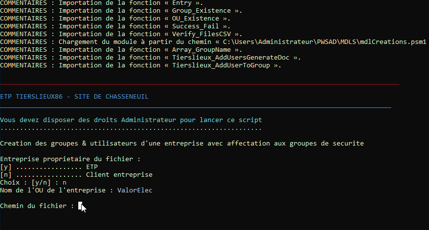
Exécution du script Powershell IntegrationAGDLP2.ps1
Le script va créer des groupes domaine local en fonction du nom de la ressource à partager.
Création des groupes domaine local avec le droit en question en suffixe
Les groupes globaux sont récupérés via une liste et il suffit d'indiquer par leur numéro lequel intégrer dans le groupe domaine local spécifier en bleu. Pour arrêter l'ajout concernant le groupe domaine local courant, on entre le chiffre zéro.
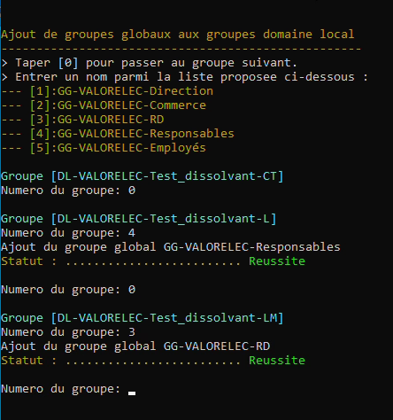
Ajout des groupes globaux aux groupes domaine local
Vérifions les accès. Par exemple, monsieur Lenoir est un commercial de ValorElec : il a droit de modification sur les fichiers qui appartiennent à son service. Le test est concluant
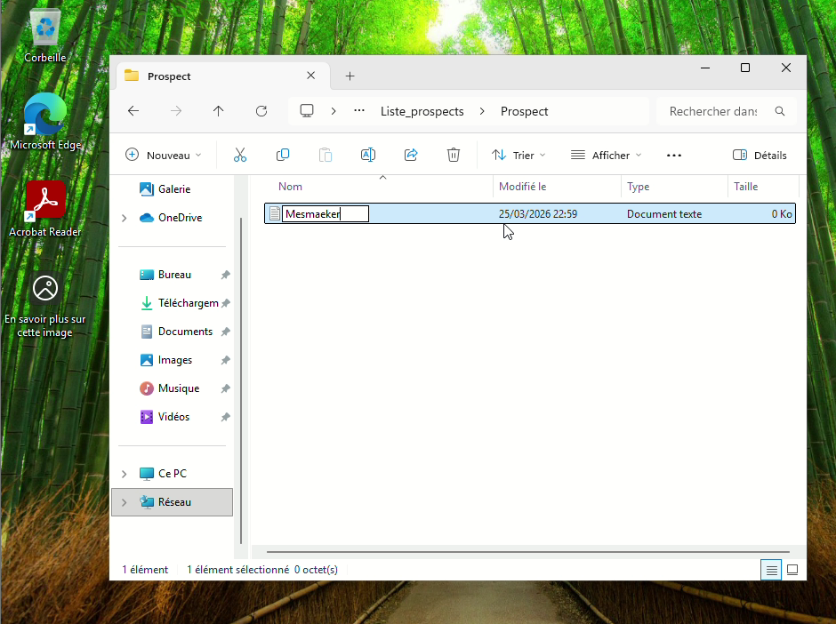
Création de fichiers dans un dossier des commerciaux par un employé du service
Par contre, monsieur Lenoir n'a pas accès aux dossiers qui concernent le département de recherche et développement.
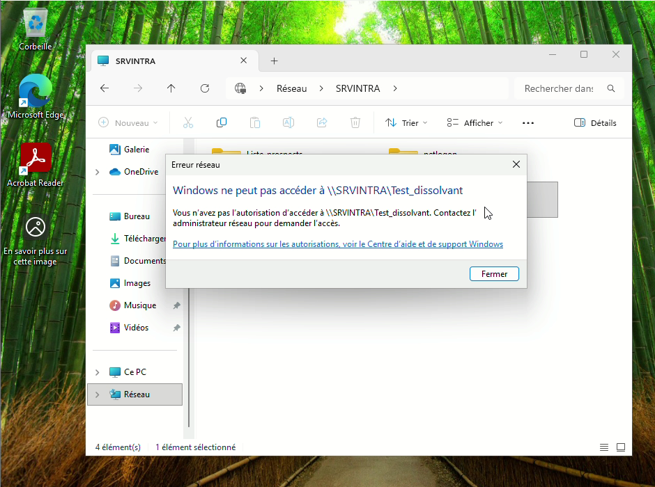
Accès refusé au dossier destiné aux chercheurs
Ce n'est pas le cas de madame Renal, qui, en tant que responsable, a bien un accès en lecture à Test_dissolvant, bien qu'elle soit elle-aussi du service commercial. Elle ne peut toutefois pas écrire, comme cela a été montré en vidéo.
Mettre en place les stratégies de groupe
Présentation de la mission
Documentation technique de la mission 4
Tâche 1
Installer via une GPO le logiciel AcrobatReader.msi pour le client ValorElec.
Tâche 2
Mettre en place un ensemble de restrictions par stratégies de groupe, comme décrites ci-après.
Les utilisateurs ne doivent pas avoir accès au panneau de configuration ;
Le mot de passe des utilisateurs doit avoir 8 caractères minimum, changer tous les mois avec un historique de 12 mots de passe qui ne peuvent pas être réutilisés et enfin, le compte doit être bloqué à deux tentatives infructueuses d'identification pendant une durée de 10 minutes ;
Pour le service de direction, le mot de passe des utilisateurs doit avoir des caractéristiques plus contraignantes : doit avoir 12 caractères minimum, changer de mot de passe tous les deux mois avec un historique de 24 mots de passe qui ne peuvent pas être réutilisés et enfin le compte doit être bloqué à chaque tentative infrustructueuse d'identification pendant une durée de 5 minutes.
Tâche 3 (bonus)
Mettre en place une stratégie d'audit afin d'être informé sur les ouvertures de compte infructueuses, sur les modifications, sur les objets Active Directory, sur le dossier de partage qui contient Acrobat... afin, en cas d'échec, de pouvoir résoudre le problème.
Tâche 4
Tester l'application des stratégies de groupe sur une machine virtuelle cliente.
Plan d'approche de la tâche 1
Préparation du logiciel AdobeAcrobat.msi
Pour respecter la contrainte du format de fichier (.msi), il faut au préalable effectuer quelques manipulations sur Adobe Acrobat tel qu’installé en tant que fichier exécutable. Il faut extraire les fichiers de l’archive .exe grâce à 7-zip, lancer une installation personnalisée via Powershell (msiexec /a), puis patcher le fichier AdobeRead.msi avec un fichier .msp. Cela permet d’apporter au logiciel les nouvelles mises à jour.
Dossier partage sur le serveur
Comme le fichier .msi est destiné à être récupéré par de nombreux postes pour être installé, il faut le mettre à disposition des utilisateurs : on doit le mettre sur un partage réseau. Créons d’abord un dossier qui ne sera pas partagé, mais permettra de contenir le sous-dossier de l’installateur Adobe Acrobat, et éventuellement, tous les autres installateurs de futures applications. On le nomme donc « Applications », et c’est le sous-dossier d’Adobe Acrobat qu’on partagera. On mettra un dollar à la fin du nom du partage, ce qui permet de ne pas afficher le dossier lorsqu’un ordinateur effectue une recherche sur le réseau.
Création de la GPO
Cette GPO s’appliquera à tous les utilisateurs de ValorElec : on prendra soin de la lier sur l’unité d’organisation « Utilisateurs ». Les groupes concernés par cette GPO seront les groupes globaux des employés et responsables de ValorElec, et on pensera à paramétrer les droits pour qu’ils puissent appliquer cette GPO.
Plan d'approche de la tâche 2
Blocage du panneau de configuration & stratégies de mot de passe et de verrouillage de compte
Pour les stratégies de mot de passe, nous allons configurer pour les utilisateurs la GPO « Default Domain Policy », tandis que pour le service de la direction, où cette stratégie est plus contraignante, nous allons devoir faire une PSO. Pour le panneau de configuration, on créera un GPO à lier à l’unité d’organisation des utilisateurs de ValorElec.
Plan d'approche de la tâche 4
Scénario de test des GPO
Pour tester ce que nous avons fait en intégrité, il faut recenser les scénarios. Notons que pour l’accès au panneau de configuration, nous sommes partis du principe que cela ne concernait que les utilisateurs de ValorElec, et non l’ensemble des utilisateurs des clients de l’entreprise, auquel cas nous aurions dû lier la GPO à une unité d’organisation plus haute. Voici un tableau recensant les situations à tester.
ACCÈS AU PANNEAU DE CONFIGURATION
STRATÉGIE DE MOT DE PASSE
STRATÉGIE DE VERROUILLAGE DE COMPTE
Autorisé
Interdit
Valide
Invalide
Seuil de connexions avant déclenchement
Durée du verrouillage
EMPLOYÉ DE VALORELEC
X
Longueur ≥ 8, critères de complexité, historique des 12 derniers mots de passe, changement obligatoire au bout de 30 jours
Dès qu’un critère de validité n’est pas respecté
2
10 minutes
RESPONSABLE DE VALORELEC
X
Longueur ≥ 12, critères de complexité, historique des 24 derniers mots de passe, changement obligatoire au bout de 60 jours
Dès qu’un critère de validité n’est pas respecté
1
5 minutes
PERSONNE NE FAISANT PAS PARTIE DE VALORELEC
X
Longueur ≥ 8, critères de complexité, historique des 12 derniers mots de passe, changement obligatoire au bout de 30 jours
Dès qu’un critère de validité n’est pas respecté
2
10 minutes
Résultats de la mission
Trois GPO sont appliquées : la Default Domain Policy pour la stratégie de mots de passe utilisateurs, VALORELEC-deploiement-AdobeAcrobatMSI pour le déploiement d'Adobe Acrobat, VALORELEC-restriction-panneau_de_configuration pour bloquer le panneau de configuration.
Les GPO sont appliquées au niveau des utilisateurs de ValorElec, sauf pour le mot de passe, qui est modifié sur la racine
En ce qui concerne la stratégie des mots de passe et de verrouillage des comptes des utilisateurs ne faisant pas partie du service de la direction, voici les paramètres entrés dans la GPO.
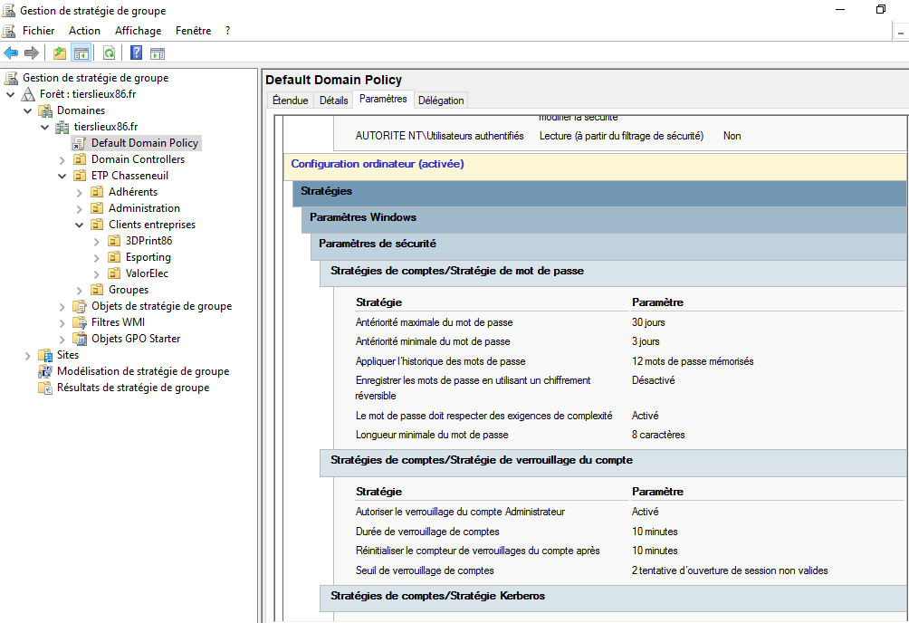
Paramètres appliqués sur l'ensemble des utilisateurs du domaine tierslieux86.fr
Pour la GPO d'Adobe Acrobat, nous remarquons qu'elle est effective.
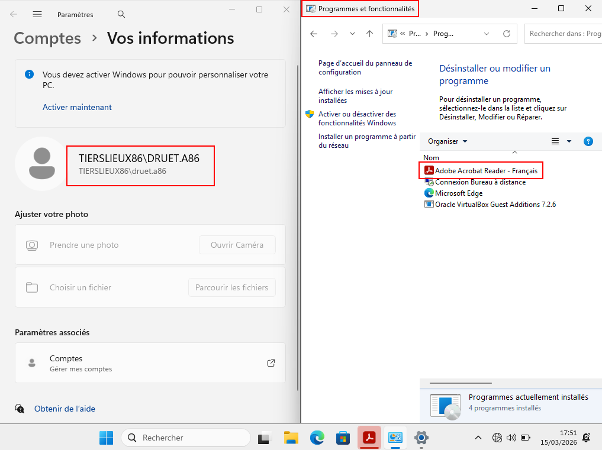
Dans le panneau de configuration, Adobe Acrobat figure dans les programmes installés
Voici la Password Settings Object (PSO), qui permet d'appliquer sur le service de la direction de ValorElec, une stratégie de mot de passe spécifique.
Création d'une PSO pour GG-VALORELEC-Direction
Ici, nous avons testé l'accès au panneau de configuration depuis un compte utilisateur appartenant à un employé de ValorElec.
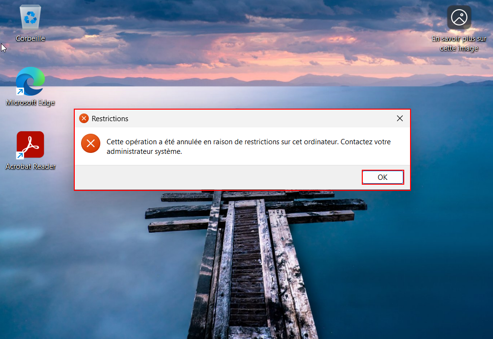
L'accès au panneau de configuration est refusé
Si on essaie de changer le mot de passe pour une valeur plus faible (longueur trop petite, pas assez complexe), on tombe sur ce message :
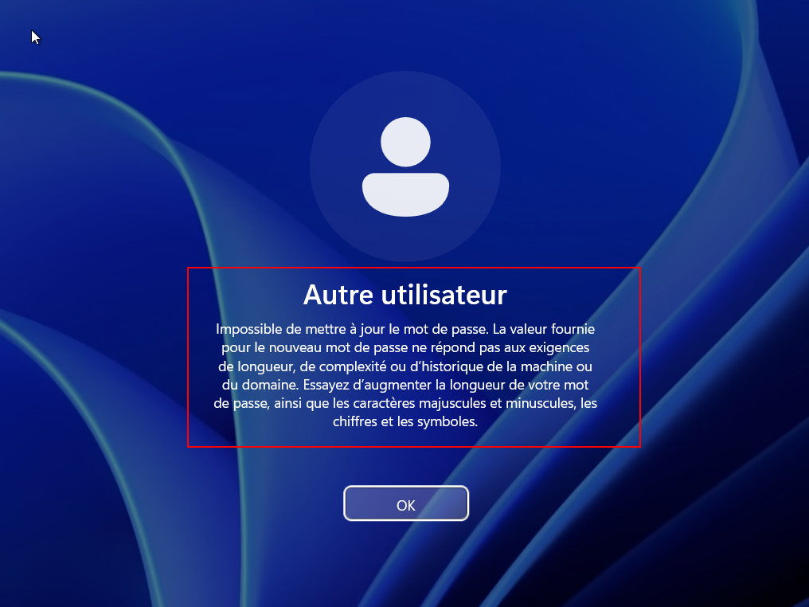
Il est demandé un meilleur mot de passe
Enfin, pour le test de verrouillage, nous sommes aussi freinés par la GPO.
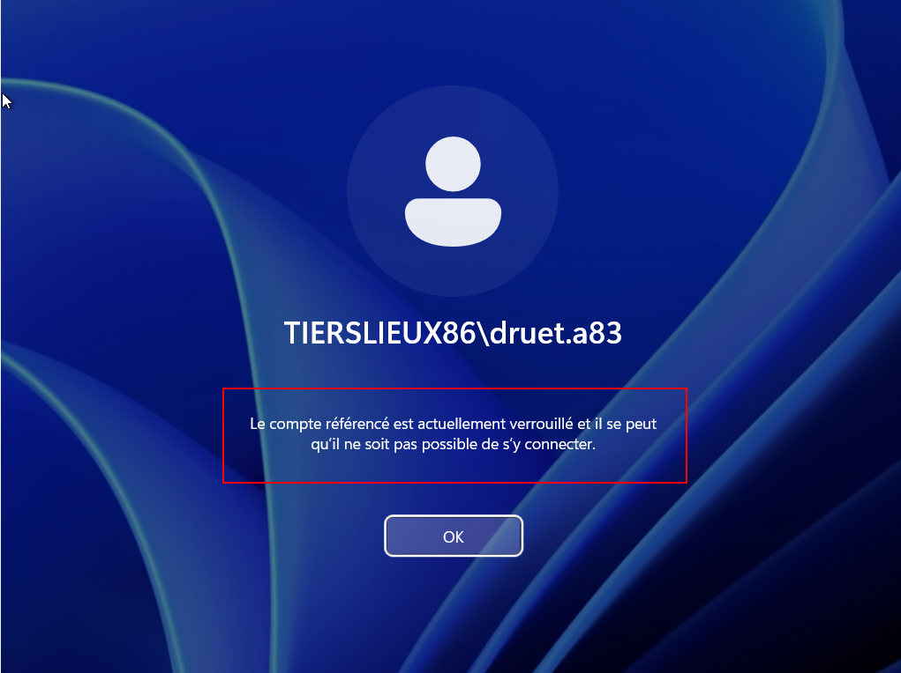
Le compte est verrouillé après deux tentatives ratées
Bilan
État des lieux
L’objectif de la mission était d’intégrer le client ValorElec à l’espace de travail partagé de Chasseneuil. Cela consistait à représenter l’organisation dans l’Active Directory, la création de compte et le peuplement de groupes, mais aussi à la mise à disposition de certains services tels qu’un serveur de fichier. Ces missions ont pu aboutir : les scripts Powershell ont non seulement répondu aux besoins de ValorElec, mais permettent aussi de généraliser l’intégration d’une entreprise quelconque à l’ETP.
Problèmes rencontrés
La tâche 2 de la mission 3 a été un casse-tête. Au départ, les groupes domaine local étaient générés à partir des statuts et services de l’entreprise. On partageait ensuite le fichier voulu et on accordait les droits aux groupes domaine local correspondant. Étrangement, des utilisateurs avaient des droits plus élevés que ce qui leur était permis sur certains fichiers. Plusieurs hypothèses ont été émises : un conflit avec le contrôle total donné à Tout le monde ? Une mauvaise suppression de l’héritage des droits ? Des vérifications et paramétrages manuels à radicalité croissante ont essayé de vaincre ce problème : restriction des droits de partage directement aux groupes domaine local, vérification de l’accès effectif dans les droits NTFS, réactivation et désactivation de l’héritage, avec puis sans suppression des droits des sous-éléments (même si le dossier partagé était vide), suppression complète du dossier pour une nouvelle création du partage, restauration du snapshot, oubli du snapshot… Et à un moment, la machine a dû être réintégrée au domaine car un snapshot de trop avait été supprimé, ce qui a rompu les liens avec la version à jour de l’annuaire et a empêché de faire le lien avec les utilisateurs actuels. En parallèle, on cumulait les instantanés (environ 13) depuis le début de l’année 2026. Autant recommencer et recréer le domaine pour recommencer sur une base propre. L’attribution des droits a fonctionné à deux reprises comme souhaité, avant d’échouer à nouveau. Ce pourquoi il a été décidé de changer de plan, car du retard s'était accumulé.
Suggestions d'amélioration
On pourrait augmenter la sécurité des scripts Powershell et ajouter la gestion des erreurs. Pourquoi pas se renseigner sur ABE (Access-Based Enumeration) ? Il semblerait que, couplé à une racine DFS, cela permette une meilleure confidentialité. De cette manière, les personnes ne voient que les éléments sur lesquels ils ont des droits. En ce qui concerne le script d'octroi de droits sur les partages, étant donné que rentrer directement le chemin du fichier n'est pas sécurisé, il faudrait voir s'il est possible d'automatiser la création et la mise en ligne de disque virtuel avec iSCSI lors de l'intégration d'une entreprise, pour que la personne exécutant le script soit d'office placée dans ce répertoire. Par ailleurs, il faudrait également élaborer un script de retrait d'une entreprise cliente, car au vu du nombre de groupes domaine local créés, un ménage est nécessaire lors d'un départ. Par exemple, mettre tous les groupes désuets dans un groupe spécial avec aucun droit, pour les neutraliser. Enfin, c'est une redite, mais supprimer les groupes domaine local créés par défaut et ayant un contrôle total serait une bonne idée. Mieux encore : ne créer le groupe domaine local que s'il est non-vide.